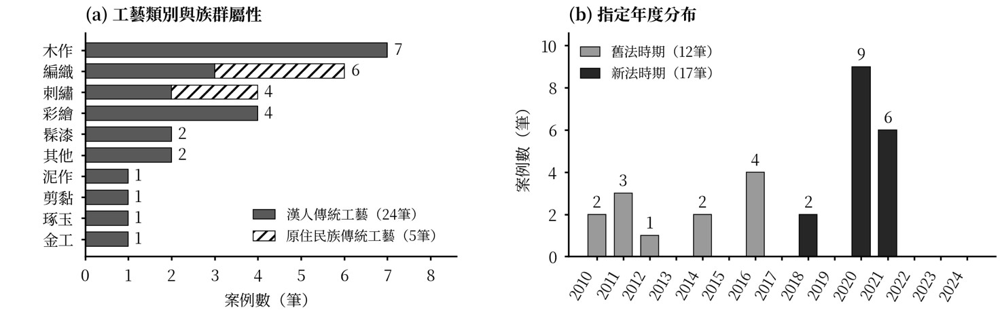
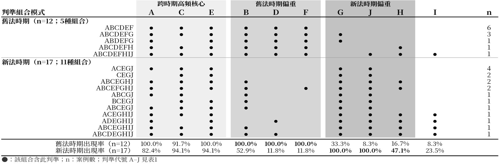
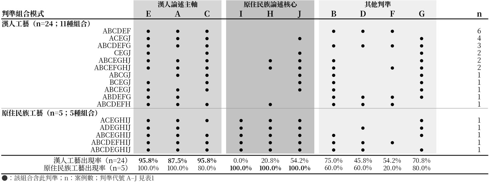

臺灣「重要傳統工藝」保存者指定之結構與價值判準分析（2010–2024）
潘敏萱
關鍵字：傳統工藝；保存者指定；價值判準；無形文化資產；文化資產保存法
摘 要
臺灣自2010年起指定「重要傳統工藝」保存者，2016年修法及2017年《傳統工藝登錄認定及廢止審查辦法》（新法）訂定後，其如何反映於指定公告文本之價值論述，尚缺乏系統性分析。本文以2010至2024年間29筆中央主管機關公告之指定理由書為對象，採文本分析與描述性統計，歸納A至J十項「重要性」判準，檢視新舊法時期之判準變遷與結構差異。結果發現：(1)29案中木作類最多（7案，24%），漢人工藝24案、原住民族工藝5案；(2)E（個人技藝卓越性，96.6%）、C（地域或流派代表性，93.1%）、A（歷史淵源與文化脈絡，89.7%）為跨時期高頻判準；(3)D（傳承瀕危性）、F（全國領先地位）由舊法時期100%降至新法時期11.8%，G（傳習積極性與意願）、J（工藝知識完整體現）分別由33.3%、8.3%升至100%，H（社群認同與社會功能）由16.7%升至47.1%，可能反映評價重點的轉向，其中H所涉及之社群面向可與UNESCO《保護非物質文化遺產公約》相互參照；(4)I（族群文化代表性）於原住民族案例均出現（100%），漢人案例則以E、A、C為主軸。整體而言，29筆指定公告文本之「重要性」判準呈現跨時期的共同性，亦可觀察到不同法規時期及族群屬性間的判準使用差異。
一、緒論
1.1 研究動機與目的
臺灣自1982年《文化資產保存法》制定後，逐步建立文化資產保護體系，並自2010年起陸續指定「重要傳統工藝」保存者，2016年修法後無形文化資產保護制度趨於完整。截至2024年，已累計形成29筆指定案例。各案例之指定理由書為觀察文化主管機關如何評估與界定「重要傳統工藝」之重要性的重要文本材料，然而現有研究尚未針對指定制度本身，以及「重要性」如何於官方文本中被建構與表述進行系統性分析。因此，本研究以2010年至2024年間之29筆「重要傳統工藝」指定案例及其公告文本為研究對象，首先分析各案例所援引之價值判準類型、組合方式及其隨時間之變化；其次梳理29筆案例之整體指定結構，包括工藝類別、族群屬性、地理分布與指定時序；最後依據公告文本所呈現之評估框架，分析現行指定制度在「重要性」論述上的一致性與落差。
1.2 研究問題與對象
本研究以2010年至2024年間文化部文化資產局依《文化資產保存法》正式公告指定之「重要傳統工藝」保存者為研究對象，限定中央主管機關之指定案例，不含地方政府登錄案例，並以各案例之指定公告文本（指定理由書）為核心分析材料，另以文化資產局歷年年報及全國文化資產資訊網所載指定名單作為統計依據，相關法規文本則作為研究之背景框架。基於上述研究範圍與對象，本研究提出三項研究問題：一、文化主管機關透過哪些價值判準建構工藝之「重要性」，各判準的出現頻率、組合方式及時間變化為何；二、29筆指定案例在工藝類別、族群屬性及地理分布上呈現何種整體結構特徵；三、不同法規時期與族群屬性之指定案例，在價值判準的使用上呈現何種差異。
1.3研究方法
本研究以官方公開文件為主要資料來源，採文本分析與描述性統計分析，不涉及田野調查或訪談。文本分析以各案例之指定理由書為核心材料，逐案精讀29份公告文本，從反覆出現的評價語句與論述型態出發，透過歸納式開放性編碼，形成A至J共十項判準；完成編碼後，對照《文化資產保存法》、《傳統工藝登錄認定及廢止審查辦法》（文化部，2017）與《傳統藝術民俗及有關文物登錄指定及廢止審查辦法》（文化部，2010）之認定條文，檢視各判準與法規規範之間可辨識之對應關係。考量單一敘述可能同時涉及多重價值面向，採多重編碼，並分析各判準之出現頻率、共現模式及時間分布。描述性統計分析則以族群屬性（漢人工藝／原住民族工藝）與指定年度所對應之法規時期（舊法／新法）為比較變項，統計並比較各判準之出現次數與比例，以及不同判準組合之呈現情形，作為文本分析結果之結構性背景支撐。資料統計與整理則使用Excel協助完成。
二、文獻回顧
2.1 台灣無形文化資產保護制度之發展沿革
臺灣無形文化資產保護制度以1982年《文化資產保存法》為起點，該版本設有「民族藝術」與「民俗及有關文物」二章，但尚無傳統工藝系統性登錄機制。2005年修法參酌日本《文化財保護法》進行整體調整，以「傳統工藝美術」名義納入「傳統藝術」類別保護。2016年全文修正為現行制度確立基礎，正式採用「無形文化資產」名稱，細分傳統表演藝術、傳統工藝、口述傳統、民俗、傳統知識與實踐等類別，確立「地方登錄、中央重要登錄」兩級制度，並強化原住民族文化資產保存規定。
2.2 現行「重要傳統工藝」指定制度之法規框架
現行制度以《文化資產保存法》（2016年修訂版）第91條至第93條為母法，以《傳統工藝登錄認定及廢止審查辦法》（2017年訂定）為操作性規範。母法第91條確立兩級登錄制度；第92條規定保存維護計畫義務；第93條第3項授權訂定認定基準及審查程序。子法第2條規定傳統工藝須具可追溯之歷史脈絡，並顯現持續累積與發展軌跡；第3條規定重要傳統工藝尚應具有重大意義及高度文化代表性，並符合相關認定基準之一；第4條則規定保存者認定須符合具備熟知並能正確體現知識技藝之能力，且具傳習能力及意願等條件。
由於《傳統工藝登錄認定及廢止審查辦法》於2017年6月29日始訂定，而重要傳統工藝保存者指定工作早於2010年即已展開，因此2017年以前主管機關係依《傳統藝術民俗及有關文物登錄指定及廢止審查辦法》辦理相關作業，作為舊法時期之主要子法依據。法規文本雖已明定傳統工藝及保存者之認定基準，然而實務指定過程中如何透過指定公告文本呈現及論證工藝之「重要性」，仍有待進一步分析。
2.3 既有研究回顧與本研究定位
江明親（2016）探討傳統工藝文化遺產化的社群意義，聚焦工藝進入文化資產體系後的社群認同建構過程；詹思妍（2021）以傳習計畫結業藝生為研究對象，系統梳理傳習機制的執行面；林蔚嘉（2023）從政策史角度回顧《文化資產保存法》施行40年間傳統工藝保護政策的整體演變，提供制度史縱軸。綜上，既有研究主要關注傳統工藝保存制度沿革、社群意義及傳習機制等面向，對於指定理由書如何呈現及建構工藝之「重要性」，尚缺乏以官方公告文本為材料的系統性分析。
三、「重要傳統工藝」保存者指定之結構概覽（2010–2024）
就工藝類別而言，29筆案例涵蓋木作、編織、刺繡、彩繪、髹漆等十大類，木作類最多（7筆，占24%），編織類次之（6筆，占21%），兩類合計近全體案例半數。族群屬性上，漢人傳統工藝24筆（占83%），原住民族傳統工藝5筆（占17%），後者高度集中於編織與刺繡兩類（圖1(a)）。地理分布上，29筆案例以臺南市（6筆）、南投縣（5筆）、彰化縣（4筆）為主，呈現中南部集中之特徵，嘉義縣市則無案例。指定時序上，2020年為指定高峰，共9筆案例集中完成（圖1(b)），2021年則為原住民族案例集中完成之年度。

圖1 「重要傳統工藝」指定案例之工藝類別、族群屬性與指定年度分布
(圖片來源：本研究整理)
四、指定公告文本之「重要性」判準分析
4.1 十項判準之編碼架構與出現頻率
本研究於29筆公告文本中歸納出十項「重要性」判準（A至J）。E（個人技藝卓越性，96.6%）、C（地域或流派代表性，93.1%）、A（歷史淵源與文化脈絡，89.7%）為跨時期之高頻核心判準，各判準之出現次數與比例如表1。
表1 十項「重要性」判準出現次數與比例（N=29）
| 代號 | 判準類型 | 出現次數 | 出現比例 |
|---|---|---|---|
| A | 歷史淵源與文化脈絡 | 26 | 89.7% |
| B | 藝術史地位與藝術價值 | 21 | 72.4% |
| C | 地域或流派代表性 | 27 | 93.1% |
| D | 傳承瀕危性 | 14 | 48.3% |
| E | 個人技藝卓越性 | 28 | 96.6% |
| F | 全國領先地位 | 14 | 48.3% |
| G | 傳習積極性與意願 | 21 | 72.4% |
| H | 社群認同與社會功能 | 10 | 34.5% |
| I | 族群文化代表性 | 5 | 17.2% |
| J | 工藝知識完整體現 | 18 | 62.1% |
資料來源：本研究整理。
4.2 新舊法時期之判準比較
本研究以2017年6月29日《傳統工藝登錄認定及廢止審查辦法》訂定為分界，將29筆指定案例區分為舊法時期（12案）與新法時期（17案），並比較各判準於兩個時期之出現比例（圖2）。B（藝術史地位與藝術價值）、D（傳承瀕危性）、F（全國領先地位）於舊法時期案例中均為100%，新法時期則分別為52.9%、11.8%與11.8%；相對地，G（傳習積極性與意願）由舊法時期的33.3%提升至新法時期的100%，J（工藝知識完整體現）由8.3%提升至100%，H（社群認同與社會功能）由16.7%提升至47.1%。
就判準組合而言（圖2），舊法時期12案均同時包含B、D、F，新法時期17案則均同時包含G與J。B、D、F於新法時期並未完全消失。另一方面，A、C、E三項高頻判準於兩個時期均維持高比例。
上述差異顯示，兩個時期之指定公告文本在「重要性」論述上的側重點有所不同：舊法時期案例較常援引藝術史地位、傳承瀕危性與全國領先地位等判準，新法時期案例則較常援引傳習積極性、工藝知識完整體現與社群認同等判準。此一差異可能反映評價重點的轉向；其中H所涉及之社群面向，可與UNESCO《保護非物質文化遺產公約》第2條第1項及第15條所涉及之社群認可與社群參與相互參照（聯合國教科文組織，2003）。

圖2 新舊法時期之判準組合模式比較
(圖片來源：本研究整理)
4.3 漢人與原住民族工藝之論述比較
就族群屬性而言，漢人工藝與原住民族工藝在判準使用上呈現差異。I（族群文化代表性）於5筆原住民族案例中全數出現（100%），於24筆漢人案例中則未出現（0%）；H（社群認同與社會功能）於原住民族案例中亦全數出現，於漢人案例中占20.8%；J（工藝知識完整體現）於原住民族案例中全數出現，於漢人案例中占54.2%。E、A、C則於兩類案例中均屬高頻判準。
此外，《原住民族文化資產處理辦法》（2017年7月18日發布，依《文化資產保存法》第13條訂定）就原住民族文化資產之指定或登錄另訂基準，例如表現原住民族歷史重要或具代表性之文化意義、特定原住民族或部落之文化顯著性等（文化部，2017）；I僅見於原住民族案例，可能與此一制度背景有關。

圖3 漢人與原住民族工藝之判準組合模式比較
(圖片來源：本研究整理)
五、結論
綜合上述，不同法規時期之指定公告文本在「重要性」判準的使用上呈現差異：舊法時期案例較常出現藝術史地位、傳承瀕危性及全國領先地位等判準，新法時期案例則較常出現傳習積極性、工藝知識完整體現與社群認同等判準。此一差異可能反映評價重點的轉向，其中H所涉及之社群面向，亦可與UNESCO《保護非物質文化遺產公約》關注社群參與之方向相互參照（聯合國教科文組織，2003）。漢人與原住民族工藝在判準使用上亦呈現差異，其中I僅見於原住民族案例，可能與原住民族文化資產另有制度規範有關。
值得注意的是，同一工藝項目之不同保存者案例，其判準組合呈現高度一致的情形。例如，傳統木雕（木作類）5案中，舊法時期2案與新法時期3案之判準組合分別完全一致；傳統建築彩繪（彩繪類）4案中，舊法時期2案之判準組合完全一致，新法時期2案則僅有1項判準不同。此一現象可能反映指定理由書之論述慣性，而不完全取決於個案間之差異。
參考文獻
文化部（2010）。傳統藝術民俗及有關文物登錄指定及廢止審查辦法。文化部主管法規共用系統。https://law.moc.gov.tw/LawContentHistory.aspx?media=print&hid=933
文化部（2017）。傳統工藝登錄認定及廢止審查辦法。文化部主管法規查詢系統。https://law.moc.gov.tw/LawContent.aspx?id=GL001141
文化部（2017）。原住民族文化資產處理辦法。文化部主管法規查詢系統。https://law.moc.gov.tw/LawContentHistory.aspx?hid=1489&id=GL001148
江明親（2016）。傳統工藝與社群發展。文化資產保存學刊，(36)，37-53。https://doi.org/10.6941/JCHC.201606_(36).0003
林蔚嘉（2023）。臺灣無形文化資產保護政策實施歷程與課題──以傳統工藝為例。文化資產保存學刊，(63)，55-84。https://doi.org/10.6941/JCHC.202303_(63).0003
詹思妍（2021）。臺灣傳統工藝人才培育傳習機制之探討──以「重要傳統工藝保存者傳習計畫」為例〔碩士論文，國立雲林科技大學文化資產維護系〕。
聯合國教科文組織（2003）。保護非物質文化遺產公約。https://ich.unesco.org/en/convention